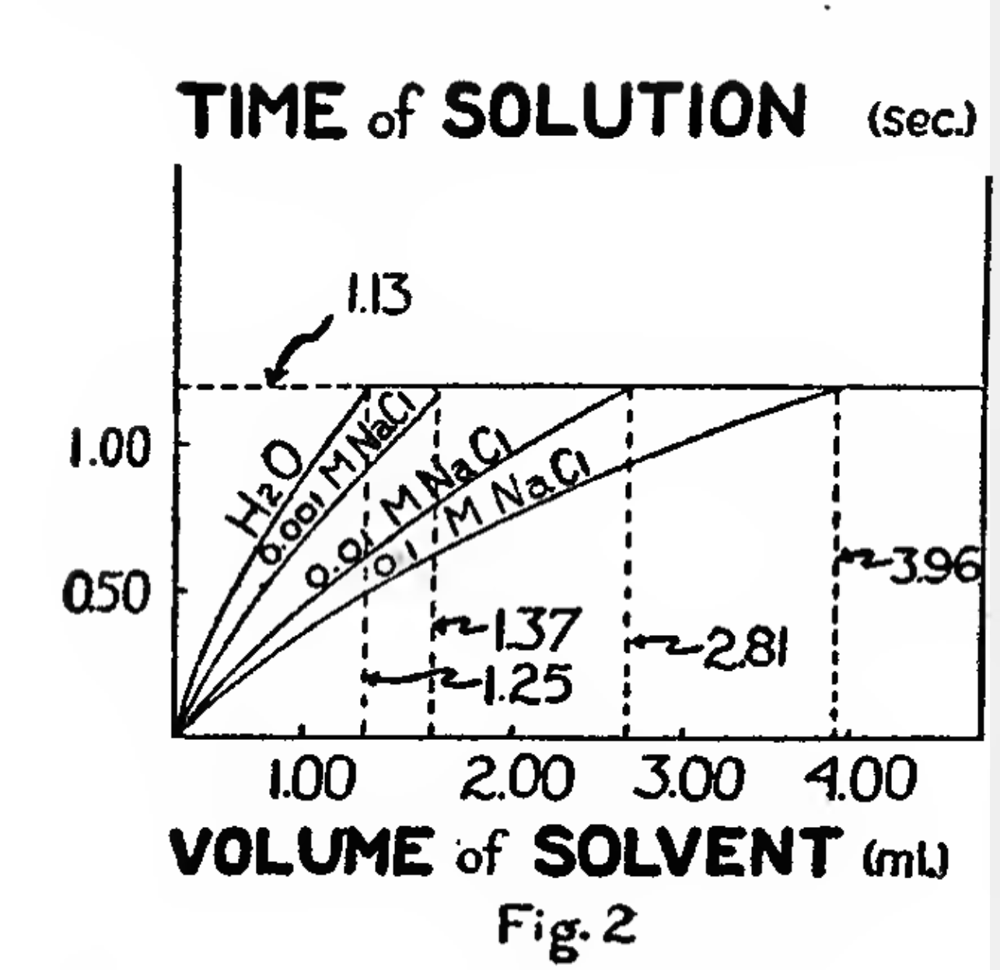
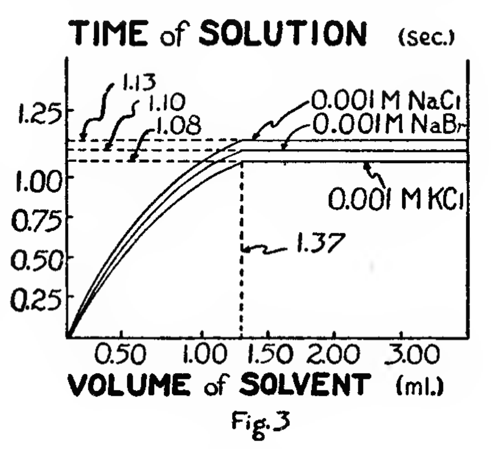
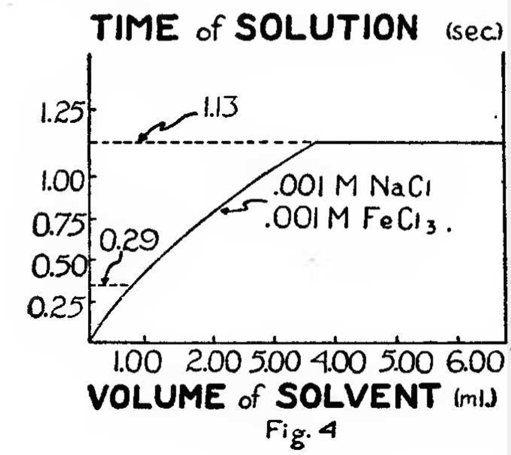

byIsaac Asimov originally published inAstounding Science FictionMarch 1948
The correlation of the structure to organic molecules with their various properties, physical and chemical, has in recent years afforded much insight into the mechanism of organic reactions, notably in the theories of resonance and mesomerism as developed in the last decade. The solubilities of organic compounds in various solvents has become of particular interest in this connection through the recent discovery of the endochronic nature of thiotimoline.1
It has been long known that the solubility of organic compounds in polar solvents such as water is enhanced by the presence uponhydrocarbon nucleus of hydrophilic—i.e. water-loving—groups, such as the hydroxy (-OH), amino (-NH2), or sulfonic acid (SO3H) groups. Where the physical characteristics of two given compounds—particularly the degree of subdivision of the material—are equal, then the time to solution—expressed in seconds per gram of material per milliliter of solvent decreases with the number of hydrophilic groups present. Catechol, for instance, with two hydroxy groups on the benzene nucleus dissolves considerably more quickly than does phenol with only one hydroxy group on the nucleus. Feinschreiber and Hravlek2 in their the studies on the problem: have contended that with increasing hydrophilism, the time of solution approaches zero. That this analysis is not entirely correct was shown when it was discovered that the compound thiotimoline will dissolve in water—in the proportions of 1 gm./ml. in minus 1.12 seconds. That is, it will dissolve before the water is added.
Previous communications from these laboratories indicated thiotimoline to contain at least fourteen hydroxy groups, two amino groups and one sulfonic acid group.3 The presence of a nitro group (-NO2) in addition has not yet been confirmed and no evidence as yet exists as to the nature of the hydrocarbon nucleus, though an at least partly aromatic structure seems certain.
First attempts to measure the time of solution of thiotimoline quantitatively met with considerable difficulty because of the very negative nature of the value. The fact that the chemical dissolved prior to the addition of the water made the attempt natural to withdraw the water after solution and before addition. This, fortunately for the law of Conservation of Mass-Energy, never succeeded since solution never took place unless the water was eventually added. The question is, of course, instantly raised as to how the thiotimoline can “know” in advance whether the water will ultimately be added or not. Though this is not properly within our province as physical chemists, much recent material has been published within the last year upon the psychological and philosophical problems thereby posed.4’5
Nevertheless, the chemical difficulties involved rest in the fact that the time of solution varies enormously with the exact mental state of the experimenter. A period of even slight hesitation in adding the water reduces the negative time of solution, not infrequently wiping it out below the limits of detection. To avoid this, a mechanical device has been constructed, the essential design of which has already been reported in a previous communication.6 This device, termed the endochronometer, consists of a cell 2 cubic centimeters in size into which -a desired weight of thiotimoline is placed, making certain that a small hollow extension at the bottom of the solution cell—1 millimeter in internal diameter—is filled. To the cell, is attached an automatic pressure micro-pipette containing a specific volume of the solvent concerned. Five seconds after the circuit is closed, this solvent is automatically delivered into the cell containing the thiotimoline. During the time of action, a ray of light is focused upon the small cell-extension described above, and at the instant of solution, the transmission of this light will no longer be impeded by the presence of solid thiotimoline. Both the instant of solution—at which time the transmission of light is recorded by a photoelectric device—-and the instant of solvent addition can be determined with an accuracy of better than 0.01% If the first value is subtracted from the second, the time of solution (T) can be determined.
The entire process is conducted in a thermostat maintained at 25.00° C—to an accuracy of 0.01° C.
The extreme sensitivity of this method highlights the deviations resulting from trifling impurities present in thiotimoline. (Since no method of laboratory synthesis of the substance has been devised, it may be practically obtained only through tedious isolation from its natural source, the bark of the shrub Rosacea Karlsbadensis rufo.7) Great efforts were therefore made to purify the material through repeated recrystallizations from conductivity water—twice re-distilled in an all-tin apparatus—and through final sublimations. A comparison of the solution times (T) at various stages of the purification process is shown in Table I.
Table I
| Purification Stage | Average “T”(12 obs.) | “T” Extremes | % error |
| As isolated | —0.72 | —0.25; —1.01 | 34.1 |
| First Recrystallization | —0.95 | —0.84; —1.09 | 9.8 |
| Second Recrystallization | —1.05 | —0.99; —1.10 | 4.0 |
| Third Recrystallization | —1.11 | —1.08; —1.13 | 1.8 |
| Fourth Recrystallization | —1.12 | —1.10; —1.13 | 1.7 |
| First Resublimation | —1.12 | —1.11; —1.13 | 0.9 |
| Second Resublimation | —1.122 | —1.12; —1.13 | 0.7 |
It is obvious from Table I that for truly quantitative significance, thiotimoline purified as described must be used. After the second resublimation, for instance the error involved in an even dozen determinations is less than 0.7% with the extreme values being —1.119 seconds and —1.126 seconds.
In all experiments described subsequently in this study, thiotimoline so purified has been used.
As would seem reasonable, experiments have shown that increasing the volume of solvent enables the thiotimoline to dissolve more quickly—i.e., with an increasingly negative time of solution. From Figure 1, however, we can see that this increase in endochronic properties levels off rapidly after a volume of solvent of approximately 1.25 ml. This interesting plateau effect has appeared with varying volume of solvent for all varieties of solvents used in these laboratories, just as in all cases the time of solution approaches zero with decreasing volume of solvent.
In Figure 2, the’ results. are given of the effect of the time of solution (T) of varying the volume of solvent, where the solvent consists of varying concentrations of sodium chloride solution. It can be seen that although in each case, the volume at which this plateau is reached differs markedly with the concentration, the heights of the plateau are constant (i.e. —1.13). The volume at which it is reached, hereinafter termed the Plateau Volume (PV), decreases with decreasing concentration of sodium chloride, approaching the PV for water as the NaCl concentration approaches zero. It is, therefore, obvious that a sodium chloride solution of unknown concentration can be quite accurately characterized by the determination of its PV, where other salts are absent.

This usefulness of PV extends to other ions as well. Figure 3 gives the endochronic curves for 0.001 molar solutions of sodium chloride, sodium bromide, and potassium chloride. Here, the PV in each case is equal within the limits of experimental error—since the concentrations in each case are equal—but the Plateau Heights (PH) are different.

A tentative conclusion that might be reached from this experimental data is that the PH is characteristic of the nature of the ions present in solution whereas the PV is characteristic of the concentration of these ions. Table II gives the values of Plateau Height and Plateau Volume for a wide variety of salts in equal concentrations, when present alone.
Table II
| Solvent (Salt solutions in 0.001 M concentration) | Plateau Height (PH) seconds | Plateau Volume (PV) milliliters |
| Water | —1.13 | 1.25 |
| Sodium Chloride solution | —1.13 | 1.37 |
| Sodium Bromide solution | —1.10 | 1.37 |
| Potassium Chloride solution | —1.08 | 1.37 |
| Sodium Sulphate solution | —0.72 | 1.59 |
| Calcium Chloride solution | —0.96 | 1.58 |
| Magnesium Chloride solution | —0.85 | 1.59 |
| Calcium Sulphate solution | —0.61 | 1.72 |
| Sodium Phosphate solution | —0.32 | 1.97 |
| Ferric Chloride solution | —0.32 | 1.99 |
‘The most interesting variation to be noted in Table II is that of the TV with the valence type of the salt present. In the ease of salts containing pairs of singly-charged ions—i.e. sodium chloride, potassium chloride, and sodium bromide—the PV is constant for all. This holds also for those salts containing one singly charged ion and one doubly charged ion—i.e. sodium sulphate, calcium chloride, and magnesium chloride—where the PV, though equal among the three varies markedly from those of the first set. The PV is, therefore, apparently a function of the ionic strength of the solution.
This effect also exists in connection with the Plateau Height, though less regularly. In the case of singly charged ions, such as in the first three salts listed in Table II, the PH is fairly close to that of water itself. It falls considerably where doubly charged ions, such as sulphate or calcium are present. And when the triply charged phosphate ion or ferric ion is present, the value sinks to merely a quarter of its value in water.
Experiments currently in progress in these laboratories age concerned with the extremely important question of the variation of these endochronic properties of thiotimoline in the presence of mixtures ‘of ions. ‘The state of our data at present does not warrant very general conclusions, but even our preliminary work gives hope of the further development of the endochronic methods of analysis. Thus, in Figure 4, we have the endochronic curve where a mixture of 0.001M Sodium Chloride and 0.001 Ferric Chloride solutions is the solvent. Here, two sharp changes in slope can be seen: the first at‘a solution time of —0.29, and the second at —1.13, these being the PH’s characteristic of Ferric Chloride and Sodium Chloride respectively—see Table II. The PH for a given salt would thus appear not to be affected by the presence of other salts.
This is definitely not the case, however, for the PV, and it is to a quantitative elucidation of the variation of PV with impurities in the solvent that our major efforts are now directed.
Investigations of the endochronic qualities of thiotimoline have shown that:
Careful purification of the material is necessary for obtaining quantitative results.
Increasing the volume of solvent results in increasing the negative time of solution to a constant value known as the Plateau Height (PH), at a volume of solvent known as the Plateau Volume (PV).
The value of the PH is characteristic of the nature of the ions present in the solvent, varying with the ionic strength of the solution and not varying with the addition of other ions.
The value of the PV is characteristic of the concentration of the ions present in the solvent, being constant for different ions in solution of equal ionic strength, but, varying markedly with the admixtures of second varieties of ions.
As a result of all this, it is suggested that endochronic methods offer a means of rapid—2 minutes or less—and accurate—within 0.1% at least—analysis of inorganic, water-soluble materials.
P. Krum and L. Eshkin, Journal of Chemical Solubilitics, 27, 109–114 (1944). “Concerning the Anomalous Solubility of Thiotimoline.”
E. J. Feinschreiber and Y. Hravlek, Journal of Chemical Solubilities, 22, 57–68 (1939), “Solubility Speeds and Hydrophilic Groupings.”
P. Krum, L. Eshkin. and O. Nile, Annals of Synthetic Chemistry, 115, 1122-1145; 1208–1215 (1945), “Structure of Thiotimoline. Parts I & II.”
G. H. Freudler, Journal of Psychochemistry, 2, 476–488 (1945), “Initiative and Determination: Are They Influenced by Diet?—As tested by Thiotimoline Solubility Experiments.”
E. Harley-Short, Philosophical Pro- ceedings & Reviews, 15, 125–197 (1946). “Determinism and Free-Will. The Appli- cation of Thiotimoline Solubility to Marxian Dialectic.” P. Krum, Journal of Chemical Solubilities, 29, 818–819 (1946), “A Device for the Quantitative Measurement of Thiotimoline Solubility Speed.”
A. Roundin, B. Ley, and Y. J. Prutt, Proceedings of the Society of Plant Chenstry, 80, 11–18 (1930), “Natural Products isolated from shrubs of the genus Rosacea.”
Tiotimolin kak Ispitatel Marksciiskoy dilektiki B. Kreschiatika, Journal adil i Sovetskoy Ticorit Vol. 11, No. 3.
Philossopliia Neopredelennosti ieal molin, Molvinski Pogost i Z. Brikalo, Mir i Kultura Vol. 2, No. 31.